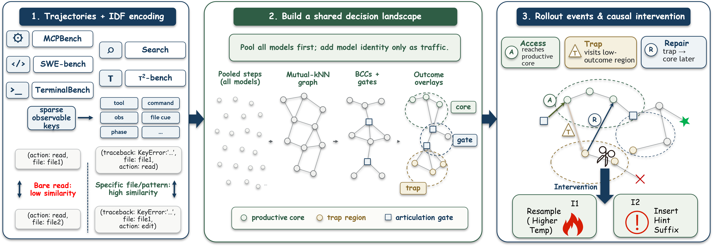
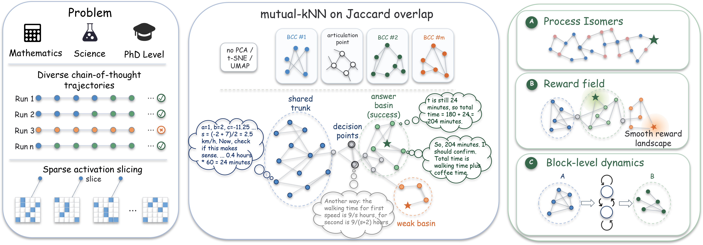
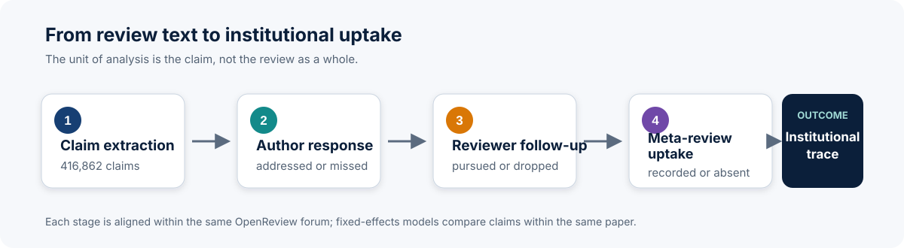

02 / Selected work
Projects
Research projects and technical work.
Research Projects

TraceGraph: Shared Decision Landscapes for Diagnosing and Improving Agent Trajectories
Introduces TraceGraph, a graph-based framework that turns multi-model agent trajectories into a shared decision landscape. It identifies productive cores, trap regions, and rollout-level events such as access, trap exposure, and repair, making it possible to compare how agents navigate the same task process and to design trap-aware recovery strategies for downstream improvement.

SliceGraph: Mapping Process Isomers in Multi-Run Chain-of-Thought Reasoning
Introduces SliceGraph, a post-hoc graph view of multi-run Chain-of-Thought reasoning built from similarity between reasoning slices. The paper shows that even when multiple runs reach the same final answer, they often travel through distinct process families and shared intermediate reasoning states, revealing rich process geometry that final-answer aggregation misses.

From Fluency to Accountability: A Claim-Lifecycle Analysis of AI-Like Peer Reviews at ICLR 2026
Analyzes 53,463 public ICLR 2026 reviews and 416,862 extracted claims to study how review concerns move through author responses, reviewer follow-up, and meta-review uptake. Rather than labeling individual reviews as AI-generated, the project uses a continuous, unsupervised AI-likeness style proxy. The results show no broad collapse in surface quality or evidence support; the clearer difference appears downstream, where more AI-like claims are less likely to be answered by authors or incorporated into meta-review rationales. The study proposes claim-level traceability as a framework for evaluating accountability in AI-assisted peer review.

CoT Folding: Structural Analysis of LLM Reasoning Trajectories
Treating Chain-of-Thought reasoning as analogous to protein folding. The framework measures pairwise similarity between token segments using neuron activation patterns (NAD) to reveal how reasoning "folds" in activation space, forming compact cores, long-range return connections, and drifting branches. Proposes Native Fold Score (NFS), a fully unsupervised, parameter-free quality metric for CoT reasoning that requires no correctness labels.

Reasoning Across Languages: Activation Agreement and Language Heuristics
Evaluates whether sparse activation agreement can select stronger mathematical reasoning trajectories when candidates solve the same problem in 18 languages. Across 2,250 trajectories from 125 PolyMath-Top problems, activation-based ConsensusMin reaches 25.6% accuracy, compared with 20.8% for a fixed-first baseline and 22.4% for the best individual language. The project also documents where language identity, entropy preferences, and code-switching diagnostics fail as reliable correctness proxies.


Entropy Is Not Frequency: Auditing the 80/20 Structure of Reasoning Tokens
Independently audits the observational claims behind Beyond the 80/20 Rule across 51 uncertainty caches, 539,466 trajectories, and 1.116 billion token positions. The minority high-entropy pattern is robust, but its numerical cutoff depends on the model, task, metric, and unit of aggregation. Five uncertainty metrics agree substantially rather than perfectly, and frequency remains only a weak proxy for entropy. This project does not reproduce the original reinforcement-learning intervention or claim a causal effect.
Technical Work

Paper Assistant System
A full-stack intelligent academic paper platform with two integrated subsystems: a Paper Writing Assistant for uploading, editing, compiling, and scoring LaTeX papers with AI-powered feedback (GLM-4), featuring real-time compilation, Monaco editor with SyncTeX bidirectional sync, and multi-dimensional scoring; and an ArXiv Paper Agent for automated daily ArXiv paper fetching with six-dimensional scoring and personalized recommendations.
Zeroth Bot: Humanoid Robot Assembly, Sim-to-Real Training & Deployment
Built and deployed a Zeroth-01 humanoid robot as part of the Tengfei Innovation Program (advised by Prof. Li Shang). Assembled the full hardware platform including 3D-printed chassis, servo motors, and embedded controller. Performed sim-to-real locomotion training using an open-source simulation framework, then transferred the learned policy to the physical robot for real-world walking deployment.